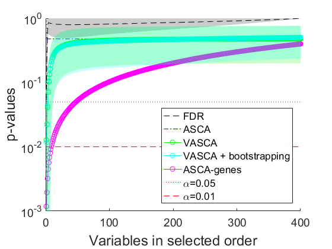
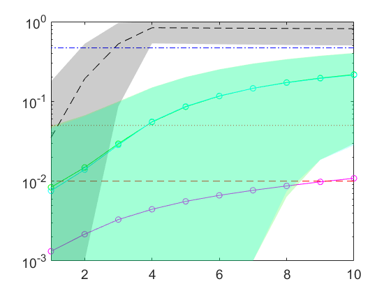
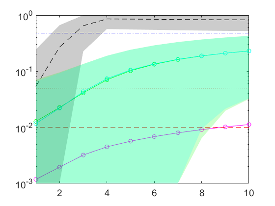
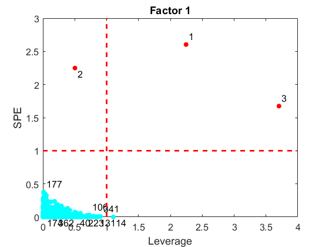
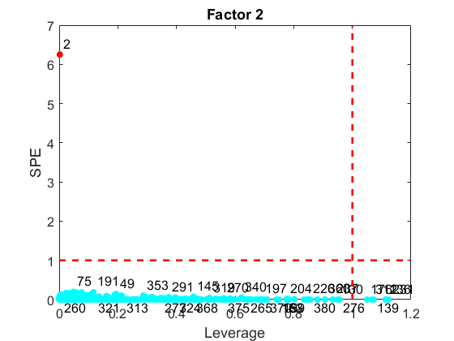

Fourth simulation example, subexample A, in Variable-Selection ANOVA Simultaneous Component Analysis. Bioinformatics. 2022
Camacho J, Vitale R, Morales-Jimenez D. and Gómez-Llorente C.
In this fourth experiment we simulate data sets with two significant factors, of four and three levels, respectively. Each factor is simulated as in the third example, so that a significant multivariate relationship exists between each factor and three variables.
coded by: Jose Camacho (josecamacho@ugr.es) last modification: 05/Nov/2022
Copyright (C) 2022 University of Granada, Granada Copyright (C) 2022 Jose Camacho Paez
This program is free software: you can redistribute it and/or modify it under the terms of the GNU General Public License as published by the Free Software Foundation, either version 3 of the License, or (at your option) any later version.
This program is distributed in the hope that it will be useful, but WITHOUT ANY WARRANTY; without even the implied warranty of MERCHANTABILITY or FITNESS FOR A PARTICULAR PURPOSE. See the GNU General Public License for more details.
You should have received a copy of the GNU General Public License along with this program. If not, see http://www.gnu.org/licenses/.
Contents
Simulation
clear n_obs = 48; % number of individuals n_vars = 400; % number of responses or variables rep = 1000; % number of repetitions of the simulation close all p1 = zeros(rep,2); p2 = zeros(rep,n_vars,2); p2b = zeros(rep,n_vars,2); p3 = zeros(rep,n_vars,2); p4 = zeros(rep,n_vars,2); p22 = zeros(rep,n_vars,2); p22b = zeros(rep,n_vars,2); p33 = zeros(rep,n_vars,2); p44 = zeros(rep,n_vars,2); parfor i= 1:rep reps = 4; vars = 3; levels = {[1,2,3,4],[1,2,3]}; class = create_design(levels,reps); X = zeros(size(class,1),vars); fi = randn(length(levels{1}),vars); fj = randn(length(levels{2}),vars); for ii = 1:length(levels{1}) for j = 1:length(levels{2}) X(find(class(:,1) == levels{1}(ii) & class(:,2) == levels{2}(j)),:) = simuleMV(reps,vars,8) + repmat(0.5*fi(ii,:) + 0.5*fj(j,:),reps,1); end end X = [X simuleMV(n_obs,n_vars-3,7)]; s = rng(i); [~,parglmo] = parglm(X,class); % general linear model (GLM) factorization and (ASCA type) multivariate significance testing rng(s); [~,parglmoVS] = parglmVS(X,class); % GLM factorization and (VASCA-type) incremental multivariate significance testing rng(s); [~,parglmoMC] = parglmMC(X,class); % GLM factorization and Benjamini-Hochberg (BH) univariate significant testing rng(s); parglmoG = parglm_genes(X,class); % GLM factorization and ASCA-genes p1(i,:) = parglmo.p; % Sorted p-values p2(i,:,:) = [parglmoVS.p(parglmoVS.ord_factors(1,:)',1) parglmoVS.p(parglmoVS.ord_factors(2,:)',2)]; p3(i,:,:) = [parglmoMC.p(parglmoMC.ord_factors(1,:)',1) parglmoMC.p(parglmoMC.ord_factors(2,:)',2)]; p4(i,:,:) = [parglmoG.p(parglmoG.ord_factors(1,:)',1) parglmoG.p(parglmoG.ord_factors(2,:)',2)]; % Unsorted p-values p22(i,:,:) = parglmoVS.p; p33(i,:,:) = parglmoMC.p; p44(i,:,:) = parglmoG.p; p2bb = p22(i,:,:); for j=1:2 ind = find(p2bb(1,:,j)<0.01); % VASCA + bootstrapping if ~isempty(ind) [~,parglmo] = parglm(X(:,ind),class); ascao = asca(parglmo); bpvals = pbootasca(X(:,ind), class, ascao, j, 1000, 0); p2bb(1,ind,j) = bpvals; end end % Unsorted p22b(i,:,:) = p2bb; % Sorted p2b(i,:,:) = [sort(p2bb(1,parglmoVS.ord_factors(1,:),1),'ascend')' sort(p2bb(1,parglmoVS.ord_factors(1,:),2),'ascend')']; end save example4
Plot Figures: using sorted p-values
load example4 minT = 1e-3; maxT = 1; p1(find(p1(:)<minT)) = minT; p1(find(p1(:)>maxT)) = maxT; p2(find(p2(:)<minT)) = minT; p2(find(p2(:)>maxT)) = maxT; p3(find(p3(:)<minT)) = minT; p3(find(p3(:)>maxT)) = maxT; p4(find(p4(:)<minT)) = minT; p4(find(p4(:)>maxT)) = maxT; mp3 = squeeze(mean(p3)); mp2 = squeeze(mean(p2)); mp2b = squeeze(mean(p2b)); mp4 = squeeze(mean(p4)); for j=1:2
h = figure; hold on plot(mp3(:,j),'k--') plot([1 n_vars],[mean(p1(:,j)) mean(p1(:,j))],'b-.') plot(mp2(:,j),'g-o') plot(mp2b(:,j),'c-o') plot(mp4(:,j),'m-o') plot([0 n_vars],[0.05 0.05],'r:') plot([0 n_vars],[0.01 0.01],'r--') legend('FDR','ASCA','VASCA','VASCA + bootstrapping','ASCA-genes','\alpha=0.05','\alpha=0.01','Location','southeast') xr = []; yr = []; for i=1:size(p3,2) xr = [xr;i*ones(1,2)]; yr = [yr;[mean(p3(:,i,j))-std(p3(:,i,j)) mean(p3(:,i,j))+std(p3(:,i,j))]]; end yr(find(yr<minT)) = minT; yr(find(yr>maxT)) = maxT; fill([xr(:,1);flipud(xr(:,2))],[yr(:,1);flipud(yr(:,2))],'k','FaceAlpha',0.2,'EdgeColor','none'); xr = []; yr = []; for i=1:size(p2,2) xr = [xr;i*ones(1,2)]; yr = [yr;[mean(p2(:,i,j))-std(p2(:,i,j)) mean(p2(:,i,j))+std(p2(:,i,j))]]; end yr(find(yr<minT)) = minT; yr(find(yr>maxT)) = maxT; fill([xr(:,1);flipud(xr(:,2))],[yr(:,1);flipud(yr(:,2))],'g','FaceAlpha',0.2,'EdgeColor','none'); xr = []; yr = []; for i=1:size(p2,2) xr = [xr;i*ones(1,2)]; yr = [yr;[mean(p2b(:,i,j))-std(p2b(:,i,j)) mean(p2b(:,i,j))+std(p2b(:,i,j))]]; end yr(find(yr<minT)) = minT; yr(find(yr>maxT)) = maxT; fill([xr(:,1);flipud(xr(:,2))],[yr(:,1);flipud(yr(:,2))],'c','FaceAlpha',0.2,'EdgeColor','none'); a=get(h,'CurrentAxes'); set(a,'FontSize',14) set(a,'YScale','log') ylabel('p-values','FontSize',18) xlabel('Variables in selected order','FontSize',18) saveas(gcf,sprintf('Fig/example4_100_%d',j)); saveas(gcf,sprintf('Fig/example4_100_%d.eps',j),'epsc');
Plot zoom
set(a,'Box','on') ylabel('') xlabel('') axis([1 10 1e-3 1]) legend HIDE saveas(gcf,sprintf('Fig/example4_100zoom_%d',j)); saveas(gcf,sprintf('Fig/example4_100zoom_%d.eps',j),'epsc'); 
end
Compute table with statistics: using un-sorted p-values
load example4 name={'FDR F1','FDR F2','VASCA F1','VASCA F2','VASCA + bootstrapping F1','VASCA + bootstrapping F2','ASCA-genes F1','ASCA-genes F2'}'; p3b = p33(:,:,1)<0.01; % FDR, first factor p3F1_1var = sum(sum(p3b(:,1:3),2)>0)/rep; p3F1_2var = sum(sum(p3b(:,1:3),2)>1)/rep; p3F1_3var = sum(sum(p3b(:,1:3),2)>2)/rep; p3F1_FPR = sum(sum(p3b(:,4:end)))/(rep*(n_vars-3)); p3F1_FDR = sum(sum(p3b(:,4:end)))/(sum(sum(p3b))); p3F1 = [p3F1_1var p3F1_2var p3F1_3var p3F1_FPR p3F1_FDR]; p3b = p33(:,:,2)<0.01; % FDR, second factor p3F2_1var = sum(sum(p3b(:,1:3),2)>0)/rep; p3F2_2var = sum(sum(p3b(:,1:3),2)>1)/rep; p3F2_3var = sum(sum(p3b(:,1:3),2)>2)/rep; p3F2_FPR = sum(sum(p3b(:,4:end)))/(rep*(n_vars-3)); p3F2_FDR = sum(sum(p3b(:,4:end)))/(sum(sum(p3b))); p3F2 = [p3F2_1var p3F2_2var p3F2_3var p3F2_FPR p3F2_FDR]; p2bb = p22(:,:,1)<0.01; % VASCA, first factor p2F1_1var = sum(sum(p2bb(:,1:3),2)>0)/rep; p2F1_2var = sum(sum(p2bb(:,1:3),2)>1)/rep; p2F1_3var = sum(sum(p2bb(:,1:3),2)>2)/rep; p2F1_FPR = sum(sum(p2bb(:,4:end)))/(rep*(n_vars-3)); p2F1_FDR = sum(sum(p2bb(:,4:end)))/(sum(sum(p2bb))); p2F1 = [p2F1_1var p2F1_2var p2F1_3var p2F1_FPR p2F1_FDR]; p2bb = p22(:,:,2)<0.01; % VASCA, second factor p2F2_1var = sum(sum(p2bb(:,1:3),2)>0)/rep; p2F2_2var = sum(sum(p2bb(:,1:3),2)>1)/rep; p2F2_3var = sum(sum(p2bb(:,1:3),2)>2)/rep; p2F2_FPR = sum(sum(p2bb(:,4:end)))/(rep*(n_vars-3)); p2F2_FDR = sum(sum(p2bb(:,4:end)))/(sum(sum(p2bb))); p2F2 = [p2F2_1var p2F2_2var p2F2_3var p2F2_FPR p2F2_FDR]; p2bb = p22b(:,:,1)<0.01; % VASCA + bootstrapping, first factor p2bF1_1var = sum(sum(p2bb(:,1:3),2)>0)/rep; p2bF1_2var = sum(sum(p2bb(:,1:3),2)>1)/rep; p2bF1_3var = sum(sum(p2bb(:,1:3),2)>2)/rep; p2bF1_FPR = sum(sum(p2bb(:,4:end)))/(rep*(n_vars-3)); p2bF1_FDR = sum(sum(p2bb(:,4:end)))/(sum(sum(p2bb))); p2bF1 = [p2bF1_1var p2bF1_2var p2bF1_3var p2bF1_FPR p2bF1_FDR]; p2bb = p22b(:,:,2)<0.01; % VASCA + bootstrapping, second factor p2bF2_1var = sum(sum(p2bb(:,1:3),2)>0)/rep; p2bF2_2var = sum(sum(p2bb(:,1:3),2)>1)/rep; p2bF2_3var = sum(sum(p2bb(:,1:3),2)>2)/rep; p2bF2_FPR = sum(sum(p2bb(:,4:end)))/(rep*(n_vars-3)); p2bF2_FDR = sum(sum(p2bb(:,4:end)))/(sum(sum(p2bb))); p2bF2 = [p2bF2_1var p2bF2_2var p2bF2_3var p2bF2_FPR p2bF2_FDR]; p4b = p44(:,:,1)<0.01; % ASCA-genes, first factor p4F1_1var = sum(sum(p4b(:,1:3),2)>0)/rep; p4F1_2var = sum(sum(p4b(:,1:3),2)>1)/rep; p4F1_3var = sum(sum(p4b(:,1:3),2)>2)/rep; p4F1_FPR = sum(sum(p4b(:,4:end)))/(rep*(n_vars-3)); p4F1_FDR = sum(sum(p4b(:,4:end)))/(sum(sum(p4b))); p4F1 = [p4F1_1var p4F1_2var p4F1_3var p4F1_FPR p4F1_FDR]; p4b = p44(:,:,2)<0.01; % ASCA-genes, second factor p4F2_1var = sum(sum(p4b(:,1:3),2)>0)/rep; p4F2_2var = sum(sum(p4b(:,1:3),2)>1)/rep; p4F2_3var = sum(sum(p4b(:,1:3),2)>2)/rep; p4F2_FPR = sum(sum(p4b(:,4:end)))/(rep*(n_vars-3)); p4F2_FDR = sum(sum(p4b(:,4:end)))/(sum(sum(p4b))); p4F2 = [p4F2_1var p4F2_2var p4F2_3var p4F2_FPR p4F2_FDR]; X = [p3F1;p3F2;p2F1;p2F2;p2bF1;p2bF2;p4F1;p4F2]; T = table(name, X(:,1), X(:,2), X(:,3), X(:,4), X(:,5), 'VariableNames', {'Method','SigVar1','SigVars2','SigVars3','FPR','FDR'})
T =
Method SigVar1 SigVars2 SigVars3 FPR FDR
__________________________ _______ ________ ________ __________ ________
'FDR F1' 0.849 0.517 0.157 0.00015617 0.039117
'FDR F2' 0.832 0.446 0.088 0.00019899 0.054671
'VASCA F1' 0.903 0.798 0.511 0.014456 0.7218
'VASCA F2' 0.895 0.759 0.412 0.017196 0.76768
'VASCA + bootstrapping F1' 0.888 0.761 0.39 0.0084282 0.62136
'VASCA + bootstrapping F2' 0.886 0.687 0.237 0.007471 0.62102
'ASCA-genes F1' 0.613 0.201 0.024 0.02169 0.91131
'ASCA-genes F2' 0.778 0.382 0.072 0.020219 0.86694
ASCA-genes example
close all load example4 reps = 4; vars = 3; levels = {[1,2,3,4],[1,2,3]}; class = create_design(levels,reps); X = zeros(size(class,1),vars); fi = randn(length(levels{1}),vars); fj = randn(length(levels{2}),vars); for ii = 1:length(levels{1}) for j = 1:length(levels{2}) X(find(class(:,1) == levels{1}(ii) & class(:,2) == levels{2}(j)),:) = simuleMV(reps,vars,8) + repmat(0.5*fi(ii,:) + 0.5*fj(j,:),reps,1); end end X = [X simuleMV(n_obs,n_vars-3,7)]; parglmo = parglm_genes(X,class,[],[],[]); f=1; plot_scatter([(parglmo.factors{f}.D./parglmo.factors{f}.UCD'),(parglmo.factors{f}.E/parglmo.factors{f}.UCQ)], [], [ones(3,1);2*ones(n_vars-3,1)], {'Leverage','SPE'}, {1,1}); title(sprintf('Factor %d',f)); saveas(gcf,'Fig/example4_ana1'); saveas(gcf,'Fig/example4_ana1.eps','epsc'); f=2; plot_scatter([(parglmo.factors{f}.D./parglmo.factors{f}.UCD'),(parglmo.factors{f}.E/parglmo.factors{f}.UCQ)], [], [ones(3,1);2*ones(n_vars-3,1)], {'Leverage','SPE'}, {1,1}); title(sprintf('Factor %d',f)); saveas(gcf,'Fig/example4_ana2'); saveas(gcf,'Fig/example4_ana2.eps','epsc'); 